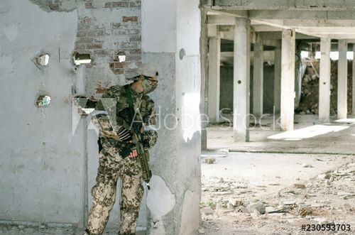

¡Alarma!
El sabotaje funcionó, pero el operador de radio alcanzó a activar una alarma manual antes de que pudieras detenerlo. Ahora escuchas pasos rápidos acercándose desde múltiples direcciones.
Tienes segundos para decidir. A través de una ventana alta ves el techo del edificio adyacente: podrías saltar y escapar hacia el exterior, aunque es un salto arriesgado. O podrías esconderte dentro de la base y esperar a que bajen la guardia.
Los pasos se acercan. Cinco segundos. Cuatro. Tres...
Estado de la misión
Etapa 4 de 5: Situación crítica
Evaluar opciones de escape
Ruta techo: Salto de aproximadamente 2 metros hacia el techo adyacente. Alto riesgo físico, alto éxito de escape. Ruta interior: Cuarto de limpieza cercano puede servir de escondite temporal. Riesgo: revisión sistemática de la base.